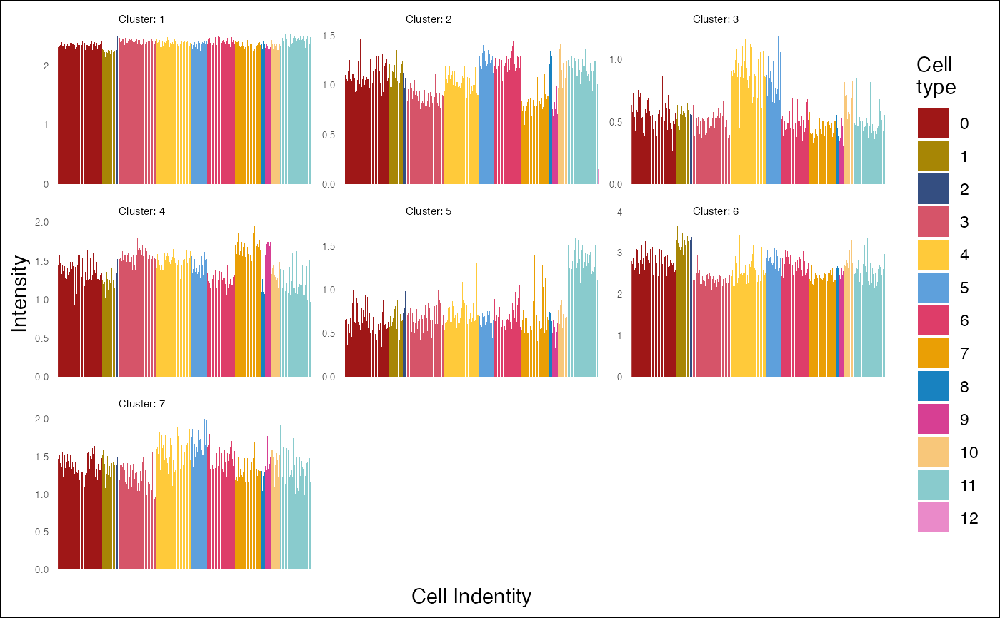
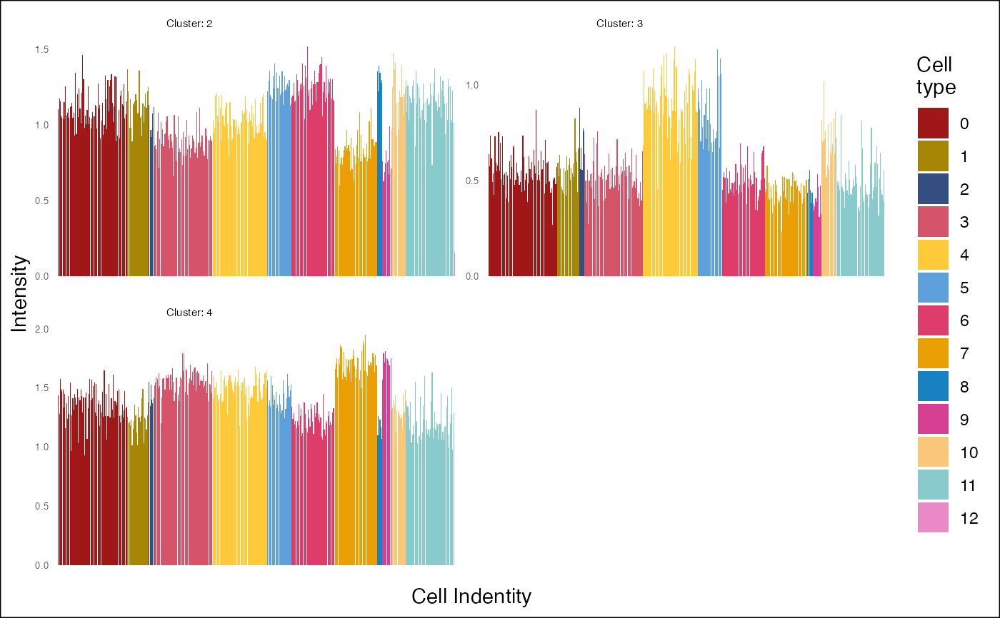

R/plot_profiles.R
plot_profiles.RdThis function generates a barplot showing the expression profiles of cell type-specific genes across different cell types.
plot_profiles(
data = NULL,
ident = NULL,
nb_column = NULL,
color_cell_type = NULL,
size_text_y = 5,
size_label = 2,
legend_name = "Cell\ntype"
)A ClusterSet object.
A named vector containing the cell type identities for each cell. Typically the result from the Idents() function on a Seurat object (see Seurat library).
The number of columns in the facet grid of the plot. If not provided, it is automatically computed as the square root of the number of cell types.
A named vector of colors (with cell type as names) used to distinguish between different cell types in the plot. If not provided, the default hue color palette is used.
The font size of the y-axis tick labels.
The font size of the cluster labels.
A name for the legend.
A ggplot object showing the expression profiles of cell type-specific genes.
# Load a Seurat object
load_example_dataset("7870305/files/lymph_node_tiny_2")
#> |-- INFO : Dataset 7870305/files/lymph_node_tiny_2 was already loaded.
# Load a ClusterSet object
load_example_dataset("7870305/files/lymph_node_tiny_clusters_2")
#> |-- INFO : Dataset 7870305/files/lymph_node_tiny_clusters_2 was already loaded.
plot_profiles(lymph_node_tiny_clusters_2, ident=Seurat::Idents(lymph_node_tiny_2))
#> |-- INFO : Number of cells types: 13
#> |-- INFO : Number of cells: 442
lv <- levels(Seurat::Idents(lymph_node_tiny_2))
pal <- discrete_palette(n=length(lv))
names(pal) <- lv
plot_profiles(lymph_node_tiny_clusters_2, ident=Seurat::Idents(lymph_node_tiny_2), color_cell_type = pal)
#> |-- INFO : Number of cells types: 13
#> |-- INFO : Number of cells: 442

plot_profiles(lymph_node_tiny_clusters_2[2:4,], ident=Seurat::Idents(lymph_node_tiny_2), color_cell_type = pal)
#> |-- INFO : Number of cells types: 13
#> |-- INFO : Number of cells: 442
